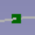

Cables WireFlex/de
|
|
| Menüeintrag |
|---|
| Leitungsverlauf → Neuer Leitungsverlauf |
| Arbeitsbereich |
| Cables |
| Standardtastenkürzel |
| W F |
| Eingeführt in Version |
| 0.1.0 |
| Siehe auch |
| Cables KnotenHinzufügen, Cables KnotenLöschen, Cables KnotenVerknüpfen, Cables KnotenbefestigungEntfernen |
Beschreibung
Der  Leitungsverlauf (WireFlex-Objekt) ist vom
Leitungsverlauf (WireFlex-Objekt) ist vom  Draft Linienzug-Objekt abgeleitet und erbt alle seine Eigenschaften. Der Hauptunterschied besteht darin, dass der Leitungsverlauf jeden seiner Knoten an einen externen Knoten oder ein externes Objekt befestigen kann (Befestigen an ein Objekt wird als Befestigen an sein Placement.Base verstanden). Nicht jeder Knoten muss befestigt werden, einige von ihnen können je nach aktuellem Bedarf frei beweglich bleiben. Ein weiterer Unterschied ist, dass ein Leitungsverlauf (WireFlex) drei verschiedene Formen annehmen kann (siehe Eigenschaft Path Type).
Draft Linienzug-Objekt abgeleitet und erbt alle seine Eigenschaften. Der Hauptunterschied besteht darin, dass der Leitungsverlauf jeden seiner Knoten an einen externen Knoten oder ein externes Objekt befestigen kann (Befestigen an ein Objekt wird als Befestigen an sein Placement.Base verstanden). Nicht jeder Knoten muss befestigt werden, einige von ihnen können je nach aktuellem Bedarf frei beweglich bleiben. Ein weiterer Unterschied ist, dass ein Leitungsverlauf (WireFlex) drei verschiedene Formen annehmen kann (siehe Eigenschaft Path Type).
Main purpose of a WireFlex is to serve as a base for a Cable or a Cable Conduit.
Alle Knoten des Leitungsverlaufs können wie Knoten eines Draft Linienzuges mit dem Befehl Cables Edit geändert werden (einfach mit einem Doppelklick auf den Leitungsverlauf in der Baumansicht). Siehe Hinweise.
Einige vom Draft Linienzug geerbte Eigenschaften des Leitungsverlaufs sind standardmäßig ausgeblendet; einigen von ihnen, wie Fillet Radius, können von den Eigenschaften der Leitung gesteuert werden, wenn der Leitungsverlauf als Basis für eine Leitung verwendet wird. Ab der Version 0.2.0 wurde die folgende Einschränkung entfernt: In der Version 0.1.4 und vorher wurde dringend empfohlen, die Eingabe des Fillet Radius als letzten Schritt beim Erstellen eines Leitungsverlaufs auszuführen. Diese Eingabe während der Bearbeitung des Leitungsverlaufs könnte zu einem Fehler führen: "Es ist nicht möglich, den Leitungsverlauf zu modifizieren aufgrund einer "non zero" Fase, Verrundung oder Unterteilung".

Beispielstruktur eines Leitungsverlaufs
Eigenschaft Path Type
(Eigenschaft eingeführt in Version 0.2.0)
Wire Flex object can take on three different shapes based on the same Points property. These are: Wire, BSpline-K, BSpline-P. For the Wire shape the Points serve as vertices, for BSpline-K shape the Points are mapped as knots (like in Draft BSpline) and for BSpline-P shape the Points act as poles (similar to Draft BezCurve, they are then more smooth and easier to control then BSpline-K).

Colors of Vertexes
(feature introduced in version 0.2.0)
By default points representing Wire Flex vertexes can have the following colors:
 for regular vertex which can be freely moved,
 or for attached vertex (see Attach Vertex for details),
or for attached vertex (see Attach Vertex for details),
If necessary, the above colors can be changed (see View Properties).
Anwendung
- Den ersten vorhandenen externen Knoten in der 3D-Ansicht auswählen.
- Einen oder mehrere zusätzliche Knoten mit gedrückter STRG-Taste in der 3D-Ansicht auswählen.
- Einen Leitungsverlauf (WireFlex-Objekt) mit einer dieser Methoden erstellen:
- Die Schaltfläche
 Leitungsverlauf drücken.
Leitungsverlauf drücken. - Den Menüeintrag Leitungsverläufe → Leitungsverlauf auswählen.
- Ein Rechtsklick in die Baumansicht oder die 3D-Ansicht und die Menüoption Leitungsverläufe → Leitungsverlauf im Kontextmenü auswählen.
- Die Schaltfläche
Hinweis1: Durch die Auswahl anderer Elemente als der Knoten wird das gesamte Objekt ausgewählt. In diesem Falle wird die Placement.Base eines ausgewählten Objekts als Referenz werwendet.
Note2: If only one vertex|entire object is selected, then created WireFlex will be built from the Points property of selected object and no vertex attachments are made. If selected object has no Points property, the creation is made from the vertexes of selected object.
Nach der Leitungserzeugung wird der erste in der 3D-Ansicht ausgewählte Knoten bzw. das erste Objekt automatisch zum Attachment Support eines Leitungsverlaufs hinzugefügt und die Map Mode-Eigenschaft wird auf Ursprung verschieben gesetzt (eine allgemeine Beschreibung der Teilanordnung finden Sie hier: Part Befestigen). Zusätzlich wird derselbe Knoten zu der Eigenschaft Vrtx_start, der letzte ausgewählte Knoten zu der Eigenschaft Vrtx_end und die ausgewählten mittleren Knoten zu den Eigenschaften Vrtxs_mid und Vrtxs_mid_idx hinzugefügt.
Alle Knoten eines Leitungsverlaufs können jederzeit gelöst oder wieder an einem anderen Objekt befestigt werden, indem man das Werkzeug  Knoten befestigen oder
Knoten befestigen oder  Knotenbefestigung entfernen aufruft.
Knotenbefestigung entfernen aufruft.
Es ist ratsam, zu experimentieren und sich mit den verschiedenen Optionen für das mögliche Bewegen von Objekten, die an einer Leitung befestigt sind, vertraut zu machen und das Verhalten der Leitung zu beobachten, je nachdem, wie viele und welche Knoten an externen Objekten befestigt sind und ob die Eigenschaft Map Mode für die gesamten Leitung aktiviert oder deaktiviert ist. Noch interessantere Möglichkeiten ergeben sich durch die Verwendung von z.B.  BefestigungsLinie or
BefestigungsLinie or  BefestigungsPunkt.
BefestigungsPunkt.

Beispiel 1
Bewegung des ersten Würfels, der am Start-Knoten des Leitungsverlaufs befestigt ist, wenn der Attachment Map Mode (Befestigungsmodus) des Leitungsverlaufs auf Translate origin (Ursprung versetzen) gesetzt wird.

Beispiel 2
Bewegung des ersten Würfels, der am Start-Knoten des Leitungsverlaufs befestigt ist, wenn der Attachment Map Mode (Befestigungsmodus) des Leitungsverlaufs deaktiviert ist.
Die animierte Version der obigen Bilder ist hier zu finden
Hinweise
- Ein Leitungsverlauf kann mit dem Befehl Cables Bearbeiten bearbeitet werden. (ausgelöst durch einen Doppelklick auf den Leitungsverlauf in der Baumansicht) (eingeführt in Version 0.2.0). Draft Bearbeiten sollte aufgrund der unten beschriebenen Einschränkungen nicht verwendet werden.
In version 0.1.4 and earlier Draft Edit was used with the following restrictions:
When in Draft Edit mode DO NOT use "Add point" and "Delete point" from context menu. This can lead to wrong assignment of points attachments. To add or delete point from WireFlex use only  Add Vertex or
Add Vertex or  Delete Vertex while not in Draft Edit mode.
Delete Vertex while not in Draft Edit mode.
Eigenschaften
Siehe auch: Eigenschafteneditor.
Ein Leitungsverlauf, ein WireFlex-Objekt, ist von einem Draft-Linienzug abgeleitet und erbt alle seine Eigenschaften. Einige der geerbten Eigenschaften sind ausgeblendet. (Siehe Beschreibung). Ein Leitungsverlauf besitzt auch die folgenden zusätzlichen Eigenschaften:
Daten
Wire Flex
- DatenVrtx_start (
LinkSub): bestimmt die Eigenschaft Attachment Support des ersten Knotens (Punkt) des Leiters. - DatenVrtx_end (
LinkSub): bestimmt die Eigenschaft Attachment Support des letzten Knotens (Punkt) des Leiters. - DatenVrtxs_mid (
LinkSubList): bestimmt die Liste der Eigenschaft Attachment Support für die mittleren Knoten (Punkte) des Leiters. Mittlere Knoten: alle Knoten außer dem ersten und dem letzten Knoten. - DatenVrtxs_mid_idx (
IntegerList): bestimmt die Liste der Indizes der Vrtxs_mid Eigenschaft Attachment Support des Leiters. Die niedrigste mid idx Zahl hat den Wert 2, die höchste einen Wert von n-1, wobei n die Anzahl der Knoten (Punkte) des Leiters ist.
Es wird empfohlen, die oben genannten Eigenschaften nicht manuell anzupassen, sondern die Werkzeuge  Knoten befestigen,
Knoten befestigen,  Knotenbefestigung entfernen oder
Knotenbefestigung entfernen oder  Bearbeiten einzusetzen, die genau dafür ausgelegt sind.
Bearbeiten einzusetzen, die genau dafür ausgelegt sind.
Wire Flex Shape
- DatenFillet Radius (
Length): specifies the radius of the fillets at the corners of the wire. It is valid and visible if Path Type =Wire. - DatenLength (
Length): (read-only) specifies the total length of the wire. - DatenPath Type (
Enumeration): specifies the type of the wire shape (introduced in version 0.2.0). Possible values:Wire,BSpline_K,BSpline_P - DatenBoundary Segment Start (
Length): specifies the length of a straight edge at the beginning of a wire. It is valid and visible if Path Type =BSpline_PorBSpline_K. It can be used when beginning of a cable sits inside a connector or if a straight part of BSpline wire is needed. Its value is represented in 3D View as a boundary vertex with a special color. This vertex cannot be attached to other objects. It is recommended to leave the value of this property > 0 if the WireFlex is used as a base for Cable or Cable Conduit. - DatenBoundary Segment End (
Length): specifies the length of a straight edge at the end of a wire. It is valid and visible if Path Type =BSpline_PorBSpline_K. It can be used when end of a cable sits inside a connector or if straight part of BSpline wire is needed. Its value is represented in 3D View as a boundary vertex with a special color. This vertex cannot be attached to other objects. It is recommended to leave the value of this property > 0 if the WireFlex is used as a base for Cable or Cable Conduit. - DatenBoundary Tangents (
Bool): it specifies if the connections between the inner BSpline edge and boundary straight edges of a wire are tangent or not. It is valid and visible if Path Type =BSpline_K. - DatenInner Tangents (
Bool): it enables/disables usage of tangents on inner BSpline knots. It is valid and visible if Path Type =BSpline_K. When enabled, the BSpline is easier to control, otherwise it can be difficult to obtain desired shape, especially if Boundary Tangents are enabled. - DatenParameterization (
Float): affects the shape of the spline. It is valid and visible if Path Type =BSpline_K. Allowed range: [0.0, 3.0] (0 -> Uniform / 0.5 -> Centripetal / 1.0 -> Chord-Length). Same as in Draft BSPline. - DatenTangency Coefficient (
Float): it specifies if inner tangents form symmetric curves around knots (value = 0.5), bent toward start of spline (value < 0.5) or bent toward end of spline (value > 0.5). Allowed range: [0.0, 1.0]. It is valid and visible if Path Type =BSpline_Kand Inner Tangents enabled.
View
Object Style
Example
Example of WireFlex with Path Type = BSpline_K, Boundary Tangents = True. Boundary Segment Start and Boundary Segment End are > 0. On the first image Inner Tangents property is set to True, on the second to False:

{kind=link}
{kind=link}
{kind=link}
{kind=link}
{kind=link}
{kind=link}
Two wires with different Inner Tangents settings. (1), (3) are the boundary straight edges, (2) is the inner spline edge
.